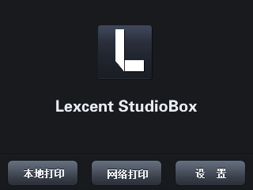

官方发布应用样例
1.STM32单片机和HMI屏通信
素材说明：STM32单片机和HMI屏通信，通过单片机对HMI屏刷色及改变HMI屏文本内容。

2.51单片机和HMI屏通信
素材说明:51(STC)单片机和HMI屏通信,通过单片机对HMI屏刷色及改变HMI屏文本内容。

3.51单片机发变量值及进度条值给HMI屏
素材说明：此实例演示如何将51(STC)单片机内部的变量赋值给屏幕上的文本，和赋值给进度条。
4.51单片机发正弦波给HMI屏显示(曲线波形)
素材说明：51（STC）单片机发正弦波给HMI屏显示，里面有有锯齿波和方波，程序屏蔽了，可以打开看效果。
5.简单GIF动画播放
素材说明：简单GIF动画播放，通过使用定时器，实现简单GIF动画的播放。此实例使用2个定时器实现图片的循环播放来实现动画效果，定时器的定时周期可以随时改变（滑块控制速度），整个过程没有下位机参与。
6.滑动调背光及控制LED亮度值
素材说明：
1.滑动滑块，LCD亮度自动改变。停止滑动，亮度值自动保存到默认亮度。
2.此实例中的滑块当前值的显示是通过单片机交互实现的，没有使用数字控件，也没有使用变量转换功能，滑动过程实时发送滑块的val值给单片机，单片机收到后转换为字符串内容再赋值给文本控件。
7.51单片机和屏双向动作
素材说明：51（STC）单片机和屏双向动作，HMI屏按键按下，开发板LED灯灭并改变HMI屏上的按键状态。此实例使用握手模式，手指按下的时候，图标并不会立刻改变，而是通知单片机，单片机收到按下通知后改变板子上的LED灯之后，发指令让屏幕切换图标。此实例不同于双态按钮的实例，双态按钮是屏幕自动切换图标状态，此实例是跟单片机交互实现图标切换。
8.全局变量的使用
素材说明：通过使用全局变量，多个文本控件绑定同一个键盘输入页面实现自动赋值，整个输入过程无需下位机参与。
9.仿苹果界面滑动解锁
素材说明：仿苹果界面滑动解锁，通过滑动对屏解锁。此功能使用滑块实现，为了实现逼真的手机滑动效果，加入了if语句判断按下位置和滑动长度。和真实手机解锁体验非常接近。
10.3D打印机操作界面样例
素材说明：3D打印机操作界面样例，里面有键盘调用，输入密码用*号显示等。
11.数字控件应用
素材说明：数字控件应用，无需单片机操作，用数字控件对文本值进行加减操作。
12.字符串和数值之间的变换操作
素材说明：字符串和数值之间的变换操作（无单片机参与），把滑块进度值（数值）赋值给文本（字符串）显示，从键盘输入键值赋值给背光亮度。
13.基于320X240分辨率下的掷骰子赌大小游戏
素材说明：
1.整个游戏过程HMI自动完成，无需用户单片机参与。工程中用到了全局控件,if esle,自锁按键，定时器，随机数，系统内置数值变量sys0,sys1,是个不错的参考例程。
2.此工程按320*240分辨率设计，别的分辨率也可以用来做测试，如果在更大的分辨率上测试，多出来的区域将会是白色。下载之前先选择您设备对应的型号。
14.增强型系列之IO扩展应用实例
素材说明：
温馨提示：此实例是基于增强型系列硬件设计的，基本型系不支持IO扩展
此实例配合IO扩展板使用，界面上的6个按钮分别邦定扩展板的6个按键。可以控制扩展板上的LED亮度和蜂鸣器的音量，均是通过pwm占空比来控制的。
15.增强型系列之RTC时钟应用实例
素材说明：
温馨提示：此实例是基于增强型（k0）系列硬件设计的，基本型（t0 t1）系不支持RTC实时时钟。
一个基于RTC的简单的电子钟，可以设置时间，可以12小时/24小时制转换。
k0 x5支持RTC x3 t0 t1系列不支持
16.增强型系列之用户存储(EEPROM)应用实例1
素材说明：
此工程做得很简单，主要演示如何使用EEPROM，只验密码，并且是数字的。如果要复杂一点的可以下载EEPROM应用实例2，有用户名和密码一起验证，有大小写切换。
温馨提示：此实例是基于增强型系列硬件设计的，基本型系不支持用户存储（EERPOM）
此工程演示如何储存用户设置的密码到EEPROM中，每次登陆调出来对比，整个过程无需单片机参与。
模块新拿到手的时候EEPROM中储存的密码是随机的，使用之前您需要从串口发指令去初始化密码。为了方便测试，此工程在登陆了一个修改密码的按钮。实际做项目的时除掉就可以了。
17.增强型系列之用户存储(EEPROM)应用实例2
素材说明：
此工程做得复杂一点，演示如何使用EEPROM储存用户名和密码，有大小写切换。如果想要简易点的主要演示EEPROM的应用可以下载EEPROM应用实例1，就会简单些，只验证密码，并且是数字的。
温馨提示：此实例是基于增强型系列硬件设计的，基本型系不支持用户存储（EERPOM）
此工程演示如何储存用户名和密码到EEPROM中，每次登陆调出来对比，整个过程无需单片机参与。
模块新拿到手的时候EEPROM中储存的用户名和密码是随机的，使用之前您需要从串口发指令去初始化用户名和密码。为了方便测试，此工程在登陆界面做了一个初始化用户名和密码的按钮。实际做项目的时候删除掉就可以了。
18.单选框 复选框控件应用实例
素材说明：单选框 复选框控件应用实例
19.简易钢琴自动演奏实例
- 素材说明：
（X系列支持）
该工程用于展示使用X系列做一个自动+手动弹奏简易电子琴的演示demo。主要涉及功能：
1，音频播放指令。
2，使用名称组(类似数组功能)
20.简易串口助手
素材说明：（全系列支持，上位软件0.58及以上版本支持）该工程使用主动解析功能在屏幕上实现串口助手的功能。可以用来做一个串口助手成品设备，方便外出携带分析串口数据。
21.ARDUINO和串口屏双向通讯
素材说明：ARDUINO和串口屏双向通讯